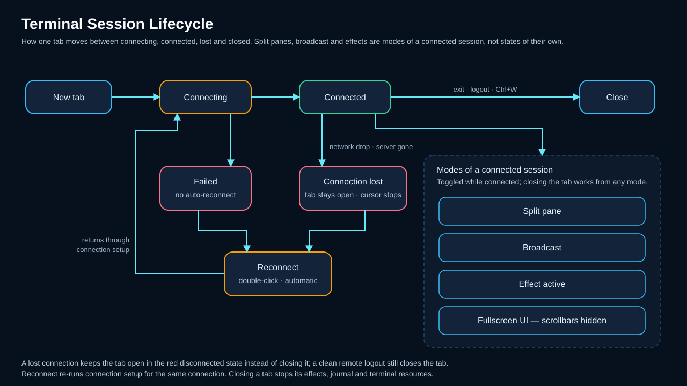

Terminal sessions¶
KorTTY provides a tabbed terminal interface with support for multiple simultaneous SSH connections, split-screen layouts, and interactive terminal management features. This guide covers tab operations, multi-window support, terminal customization, and advanced session features.
Session lifecycle¶
The following diagram shows the terminal tab and session lifecycle, including split-screen and broadcast modes.

Working with tabs¶
Manage multiple SSH sessions with these tab operations:
| Action | Shortcut |
|---|---|
| New Tab | Ctrl+T (Cmd+T on macOS) — opens Quick Connect to start a new session |
| Close Tab | Ctrl+W (Cmd+W on macOS) — closes the active tab. You are only asked to confirm when there is something to lose: the tab has split panes, or a command is still running (a local shell with a running child process, or an SSH session that is not at its prompt). An idle single terminal closes immediately. The per-connection Close without confirmation setting suppresses the prompt entirely. |
| Next Tab | ++ctrl+Tab++ |
| Previous Tab | ++ctrl+shift+Tab++ |
| Reconnect | Right-click a tab, the terminal area, or a server entry in the Dashboard. If the connection is active, it is closed and re-established immediately; if disconnected, it is re-established. The terminal window stays open. |
| Tab Groups | Right-click a tab to assign it to a named group for better organization |
Connecting safely¶
Interactive SSH terminals share host-key trust with SFTP and the SSH bootstrap used by Mosh. The first connection to a normalized host and port shows the key algorithm and OpenSSH SHA-256 fingerprint with No selected by default. After you verify and accept it, exact matches connect silently; a changed key is hard-blocked with no automatic retry. See SSH host-key verification.
Opening a same-server or newly selected connection in a split shows a progress dialog while the SSH handshake runs on a worker. The interface remains responsive for both the host-key confirmation and keyboard-interactive authentication prompts.
Some failures are refused outright rather than retried, because repeating the attempt cannot change the outcome — a changed host key, a Mosh connection configured with a jump server, or a missing Mosh runtime. The terminal clears and shows the reason immediately instead of working through the retry count. See Jump server for the Mosh restriction.
KorTTY's pinned SithTermFX build also includes a reviewed bottom-row boundary fix: moving over a hyperlink or the final visible terminal row no longer asks TerminalTextBuffer for the non-existent row at line == height.
Connection loss and automatic reconnect¶
When an established SSH connection is lost — network drop, VPN cut, server gone — the tab does not close. It switches to a red disconnected state instead: the tab title gets a (DISCONNECT) suffix, the tab turns dark red, a red status bar shows the time the connection was lost, and the terminal cursor stops blinking so a dead session no longer looks alive. Only a normal remote logout (typing exit, or Ctrl+D at the prompt) closes the tab.
KorTTY notices a silent transport death within about ten seconds: every few seconds it sends an SSH liveness probe (a global request the server must answer, the same technique as OpenSSH's ServerAliveInterval) and treats two consecutive unanswered probes as a lost connection. The probe only arms itself after the server has answered once, so servers that never reply to such requests keep their sessions untouched. This is independent of the SSH keep-alive heartbeat, which keeps idle connections open but does not detect a dead one.
To pick the session back up in the same tab, double-click the red status bar or the red tab, or use Reconnect in the tab, terminal, or Dashboard context menu. In a split tab, panes whose connection died close individually; the last remaining pane keeps the tab open and carries the reconnect offer.
With Automatically reconnect lost connections enabled (Settings → Terminal, on by default), the tab reconnects on its own: attempts start after 3 seconds and back off through 5, 10, 20 and 30 seconds up to one attempt per minute, and the red status bar counts down to the next attempt. A successful reconnect, a manual reconnect, or closing the tab ends the automatic attempts. Permanent failures — authentication, host-key verification, configuration refusals — stop them too, so a wrong password is never hammered against the server. While a session journal is running, its red decision bar takes precedence and no automatic attempt starts — the journal asks whether to reconnect and continue or to end with its closing summary. See Settings → Terminal for the setting.
Multi-window support¶
Open additional windows to organize connections by project or environment:
- New Window: Ctrl+Shift+N (Cmd+Shift+N on macOS) opens a new KorTTY window. Each window can have its own set of tabs and connections.
- Move tabs between windows: Drag a tab from the tab bar and drop it onto another KorTTY window's tab bar to move that tab (and its session, including any split terminals) into the other window.
- Reorder tabs: Drag a tab within the same window to change its order; the "+" tab stays at the end.
Font size and zoom¶
Adjust the font size of the active terminal on the fly without reconnecting:
| Shortcut | Action |
|---|---|
| Alt++ | Zoom in (increase font size) |
| Alt+- | Zoom out (decrease font size) |
| Alt+0 | Reset zoom to saved/default font |
| Ctrl + mouse wheel | Zoom in/out over the terminal (Cmd + wheel on macOS) |
Holding Ctrl (or Cmd on macOS) and scrolling the mouse wheel over the terminal changes the font size — wheel up enlarges, wheel down shrinks — instead of scrolling the buffer. This complements the Alt++ / Alt+- / Alt+0 shortcuts.
Reset zoom restores the font size and family to what the connection had when you opened the tab (or the connection's saved settings, or the global default). The same reset is available via the terminal context menu: right-click → Font size → Reset. The zoom level applies only to the currently focused terminal.
Background transparency¶
View → Zoom → Background Transparency is a slider (0–100 %) that makes the terminal background see-through to the desktop while the text stays fully opaque and sharp. At 0 % the background is solid; higher values let more of the desktop show through. The value is saved and restored across restarts.
Only the terminal area becomes transparent — the title bar, menu bar, status bar and any tab without a terminal stay solid, so the window never turns into a see-through hole.
Horizontal, vertical and nested split terminals inherit the active transparency level, including panes added after transparency was enabled. Entering fullscreen with F12 or terminal-only fullscreen with Ctrl+Shift+F temporarily renders the terminal area opaque without changing the saved value; leaving fullscreen restores that value to every pane.
Because a see-through window uses a different window style that the operating system fixes when the window opens, switching transparency on or off (crossing 0 %) only takes full effect after a restart; the status bar shows a hint when you cross that threshold. Adjusting the level while already in transparent mode applies live. In transparent mode the window uses a lightweight custom title bar (drag to move, buttons to minimise/maximise/close, double-click the strip to maximise, drag the edges to resize).
The slider lives in the in-window menu bar only (the native macOS menu bar cannot host a slider).
Local shell tabs¶
Besides SSH and Mosh, a terminal tab can host a Local Shell — the local machine's own shell, opened via a pseudo-terminal (see Local Shell). A few terminal behaviors are local-shell aware:
- Ctrl+D closes the tab for local cmd.exe/PowerShell sessions. Those Windows shells do not exit on EOF, so Ctrl+D would otherwise have no effect. For bash-family shells (Git Bash/Cygwin/WSL, macOS/Linux) and SSH, Ctrl+D keeps its normal EOF meaning — the shell exits and the local tab then auto-closes.
- Close confirmation uses local-shell wording rather than "End SSH connection?", and the window-close prompt is transport-neutral ("Active sessions"), since one window can mix SSH, Mosh and local-shell tabs.
- The current directory follows the interactive shell. On macOS and Linux, korTTY refreshes it from the local shell process; native PowerShell and cmd prompts supply absolute Windows paths. After
cd,pushd,popd, orSet-Location, Open in Snippet Editor resolves a selected file name against that current directory instead of the tab's start directory. If the directory cannot be determined or mapped safely, korTTY stops with an error rather than opening a same-named file from the wrong directory. - After an identity switch, Open in Snippet Editor is greyed out. When the session no longer runs as the identity the tab was opened with — after
su, an innerssh, or a shell-openingsudo— the context-menu entry is disabled, in SSH tabs as well as local-shell tabs: the tab's tracked directories and file access still belong to the original login and would resolve the wrong path. The entry re-enables on its own once the prompt shows the original user again (typically afterexit). A local-shell tab whose configured shell command is itself a remote client such assshormoshkeeps the entry disabled for the whole tab. If the load is triggered anyway, korTTY stops with an error instead of resolving the wrong path. - Clipboard text is preserved in agent shortcuts. Typed and pasted text travel through the same terminal-input filter, including bracketed paste and split UTF-8 input, so a pasted file name remains part of the
agent ...request and Enter dispatches it exactly once.
Session journal¶
Every terminal tab can keep a session journal: server output and typed commands go into a capture log, an AI condenses them into a readable timeline, and screenshots and notes can be added from the journal bar or the terminal's right-click menu. Journals start automatically for connections that enable them, or retroactively for a running session via Tools > Start/Stop Session Journal — the existing scrollback is imported. See Session journal.
Split-screen with broadcast¶
Split the terminal view to display multiple connections side by side, and optionally send input to all panes at once.
Split operations¶
- Split Pane: Create horizontal or vertical splits within a tab via the context menu or keyboard shortcuts.
- Independent Sessions: Each pane can show a different SSH connection.
- Resizable Panes: Drag dividers to adjust pane sizes.
- Access reason asked once per tab: when a server asks for a reason for the connection, as a CyberArk-style jump host does, a split does not ask again. korTTY sends the reason that was given when the tab was opened, because a server that asks for one closes a session that answers with nothing. A split to a different server, or a server asking something else, is asked once as well, and a new tab always starts by asking. If the server refuses the reason, for example because a ticket number has expired in the meantime, korTTY drops it and asks again on the next attempt.
- Move Panes: Hold Shift+Alt (Windows/Linux) or Shift+Option (macOS) and drag a pane onto another to reorder. Without the modifiers, mouse drag is used for text selection in the terminal.
Broadcast mode¶
When Broadcast Mode is enabled, keyboard input is sent simultaneously to all visible panes. This is useful for running the same commands on multiple servers.
Terminal effects¶
Terminal effects can change the visible terminal style and output animation. Effects are Java plugins managed from Plugins > Terminal Effects.
User controls¶
- Current terminal: Use View > Terminal Effect or the terminal context menu to choose an effect for the active terminal.
- Quick Connect: Choose the effect and speed before opening a temporary or saved connection.
- Connection Manager: Store the effect and speed on a saved connection so new tabs use it automatically.
- Speed: Use the slider for
1xthrough10x; if that is still too slow, type a custom value up to99xin the numeric speed field.
Plugin management¶
- Open Plugins > Terminal Effects to manage plugins.
- The table lists loaded plugins with active state, name, and description.
- Disable a plugin to keep it installed but unavailable for activation.
- Import external
.jarplugins. KorTTY copies them into~/.kortty/plugins. - Export plugins that have a source JAR. The bundled MOTHER effect is exportable.
Warning
Imported terminal-effect plugins are trusted Java code and are not sandboxed. Only import plugins from sources you trust.
For detailed plugin development documentation, see Terminal effect plugins.
SSH keep-alive¶
Prevent connections from dropping due to inactivity by configuring SSH keep-alive messages:
- Enable SSH Keep-Alive in the connection's Terminal tab or in Settings > Terminal.
- Set the interval (5 to 600 seconds, default: 60).
- KorTTY sends
SSH_MSG_IGNOREheartbeat messages at the configured interval and enables TCP socket keepalive while the option is active.
Note
If a server, firewall, VPN, or NAT gateway closes idle sessions sooner than the configured interval, the connection can still end. In that case, check the server-side SSH configuration and network idle-timeout settings as well as the KorTTY log.
Terminal logging¶
Writes a connection's terminal output to a file, for audit and debugging. This is independent of the Session Journal: it is a plain transcript with no summaries, markers or screenshots, and the two can run at the same time.
Configure it in either place:
- Connection Manager > Edit connection > Logging for a saved connection.
-
Quick Connect > Terminal log for a one-off session, or to change the setting for the connection you are about to open.
-
Enable logging.
- Choose a log folder. Left empty, KorTTY uses
~/.kortty/terminal-logs. You pick the folder; the file names are KorTTY's. - Choose a log format:
- Plain Text - One timestamped line per line of output.
- XML - Structured XML with timestamps.
- JSON - Structured JSON with timestamps.
- Optionally adjust the maximum file size (default: 10 MB) and the retention period (default: 30 days), and turn off Start a new file every day or Compress closed files (gzip) — both are on by default. Quick Connect's Terminal log section covers enable, folder, format and compression; size limit, retention and daily rotation keep their configured or default values.
File names¶
Every file is named <date>-<time>-<server>_<number>, for example 2026-08-04-14-30-12-web01_1.log.gz. The date leads so a folder listing sorts chronologically, and the trailing number distinguishes connections that are open at the same time — two tabs on the same server get _1 and _2 and never write into one another's file.
Rotation, compression and retention¶
By default a new file is started every day, and always again whenever the maximum size is reached (those parts are numbered .p2, .p3, …); daily rotation can be turned off to roll only by size. Nothing is ever overwritten or deleted by rotation.
Closed files are gzipped by default; the file currently being written always stays uncompressed so that a crash cannot truncate it. Turn off Compress closed files (gzip) to keep finished files as plain text instead. A connection that produces no output creates no file at all.
Files older than the retention period are deleted automatically when a connection starts and after each daily rollover. Set the retention to 0 to keep everything. Only KorTTY's own log files are ever removed — anything else in the folder is left alone, so it is safe to point the setting at a folder you also use for other things.
What is removed before writing¶
Captured lines go through the same redaction as the Session Journal, on the capture thread, before anything is buffered or written: the connection's own password and any replacement rules your organisation's policy defines. The secret never reaches the file, so there is nothing to clean up afterwards.
Log files and a log folder KorTTY created itself are set to owner-only permissions where the filesystem supports it. A folder you chose yourself is left with the permissions you gave it.
Redaction only covers what KorTTY knows
A password KorTTY stores for the connection is redacted. A secret you type into a command yourself, or one a program prints, is not — KorTTY has no way to recognise it. Treat the log folder as sensitive, and use policy replacement rules for patterns that recur.
Terminal recording¶
Terminal recording is designed as a low-resource replay feature. KorTTY records terminal screen-state changes and timing events into one JDK/GZIP streaming-compressed .korttyrec.jsonl.gz file per terminal tab session. Legacy .korttyrec.jsonl replay files remain readable.
Configure recordings¶
- To enable recording automatically after every app restart, open Settings > Video and enable Enable terminal recording after app restart.
- To enable recording only for this session, open Tools > Video Manager... and select Enable terminal recording for this app session.
- Set the Storage path. If left at the default, KorTTY uses
~/.kortty/recordings. - Choose the default format and default split scope. KorTTY replay is always available; video export requires
ffmpeg. - Enable or disable Auto-pause when the terminal is idle and set the idle threshold (default: 20 seconds).
- Optional: enable Capture terminal colors in new recordings if exported videos should reproduce terminal colors.
- Optional: set the
ffmpegpath and click Check. Ifffmpegis missing, video export stays disabled but replay files remain usable. - Click Save.
Start and stop recording¶
- Open or focus an SSH terminal tab.
- If terminal recording is enabled, click Start recording in the terminal bar, choose Tools > Start/Stop Terminal Recording, or press Ctrl+Shift+E (Cmd+Shift+E on macOS).
- If the tab contains multiple split terminals, choose whether to record only the active split or the whole tab.
- Click Stop recording or press Ctrl+Shift+E again to stop the current segment.
- Start and stop as often as needed in the same tab. KorTTY appends all segments to the same replay file until the tab closes.
Export a video¶
- Open Tools > Video Manager....
- Select a
.korttyrec.jsonl.gzreplay file from the list. - Verify that the ffmpeg status says video export is enabled.
- Click Export....
- In the export options:
- Choose Export entire recording or enter start/end times with minute or
MM:SSformat. - Choose whether to include terminal colors (available only if the replay contains color data).
- Choose WebM/VP9 or MKV/FFV1 format, then select an output path.
- While KorTTY renders frames and runs
ffmpeg, the export progress dialog shows the current phase, progress bar, and estimated remaining time. Export uses the recorded terminal geometry so large terminal screens are not cropped.
View and manage recordings¶
- Open Tools > Video Manager....
- Select a
.korttyrec.jsonl.gzreplay file. - Click View to play the replay directly inside KorTTY.
- Use the replay viewer timeline to scrub, or enter a Time jump value such as
5for minute 5 or5:30for minute 5 and 30 seconds. - Set Speed between
1xand20xto control playback speed. - Click Rename... to rename the replay file.
- Click Delete to delete the selected replay after confirmation.